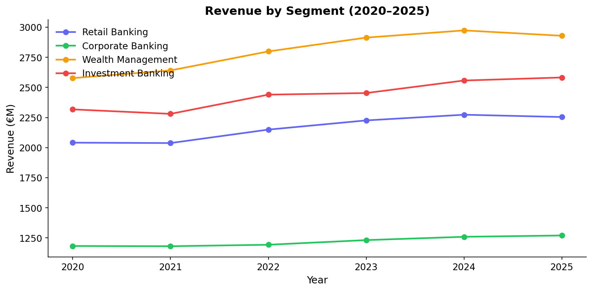
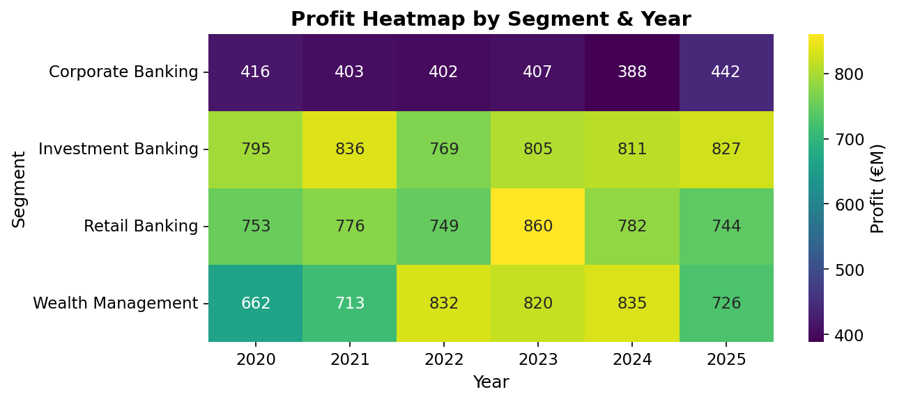
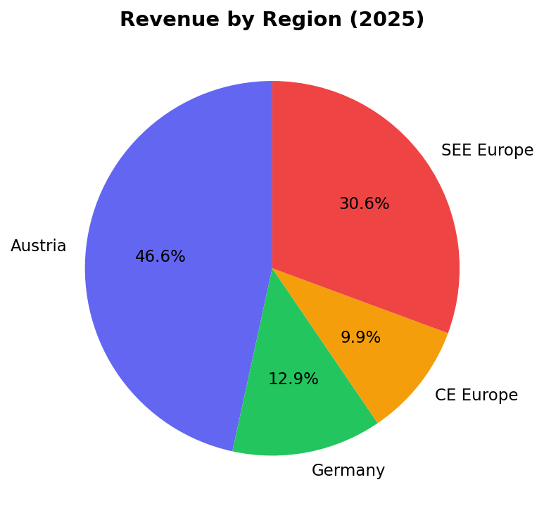
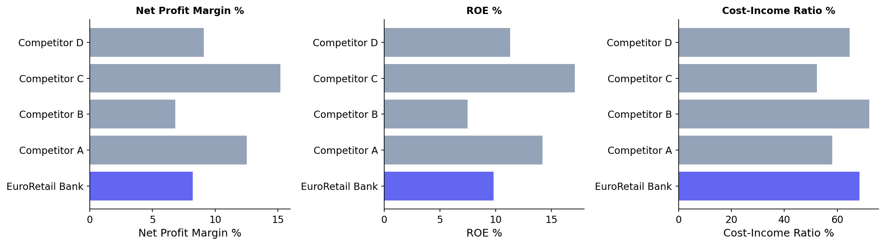
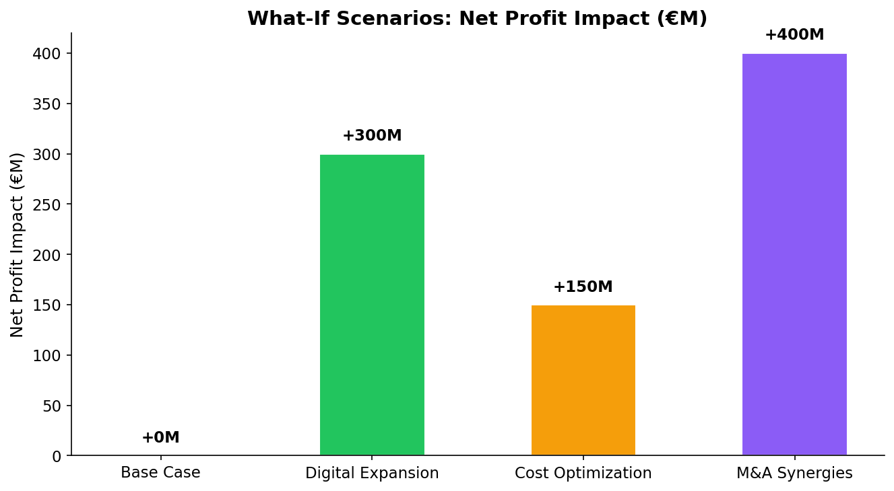

Strategy Consulting Case Study · Adem Taleb · WU Vienna
EuroRetail Bank zeigt solide, aber verbesserungswürdige Kennzahlen. Mit einer Net Profit Margin von 8,2% liegt das Institut unter dem Branchenmedian von 10,9%. Die Cost-Income Ratio von 68,5% ist zu hoch — Top-Performer erreichen <55%.
Die Analyse identifiziert drei Hebel: Digital Expansion (€300M Profit-Potenzial), Cost Optimization (€150M), und M&A Synergies (€400M bei hohem Risiko).


| Segment | Revenue 2025 | Profit 2025 | Margin |
|---|---|---|---|
| Retail Banking | €2254M | €744M | 33.0% |
| Corporate Banking | €1270M | €442M | 34.8% |
| Wealth Management | €2929M | €726M | 24.8% |
| Investment Banking | €2582M | €827M | 32.0% |
Wealth Management ist mit Abstand das profitabelste Segment (höchste Marge). Retail Banking generiert das meiste Volumen, aber bei geringerer Marge.

Der Heimatmarkt Österreich sowie Deutschland tragen den Großteil zum Umsatz bei. CE und SEE Europe bieten Wachstumspotenzial bei niedrigerer Marktdurchdringung.

| Bank | Net Profit Margin | ROE | Cost-Income Ratio | NIM |
|---|---|---|---|---|
| EuroRetail Bank | 8.2% | 9.8% | 68.5% | 1.85% |
| Competitor A | 12.5% | 14.2% | 58.2% | 2.1% |
| Competitor B | 6.8% | 7.5% | 72.1% | 1.65% |
| Competitor C | 15.2% | 17.1% | 52.4% | 2.45% |
| Competitor D | 9.1% | 11.3% | 64.8% | 1.95% |
EuroRetail liegt im unteren Mittelfeld. Competitor C (15,2% Marge, 52,4% CIR) zeigt, was möglich ist — primär durch Digitalisierung und schlanke Prozesse.

| Szenario | Revenue Impact | Cost Impact | Profit Impact | Risiko |
|---|---|---|---|---|
| Base Case | +0M | +0M | +0M | — |
| Digital Expansion | +180M | -120M | +300M | Medium |
| Cost Optimization | -50M | -200M | +150M | Low |
| M&A Synergies | +320M | -80M | +400M | High |
Invest €120M in digitale Plattformen und App-Infrastruktur. Ziel: Reduzierung der Cost-Income Ratio auf 60% innerhalb von 3 Jahren. Hebelwirkung: €300M zusätzlicher Nettogewinn.
Prozessoptimierung und Filial-Netzwerk-Reduktion um 15%. Kosteneinsparung von €200M bei einmaligem Transformationsaufwand von €50M.
Akquisition eines Fintechs oder Regionalbank in SEE Europe. Höchstes Potenzial (€400M), aber auch höchstes Implementierungsrisiko.